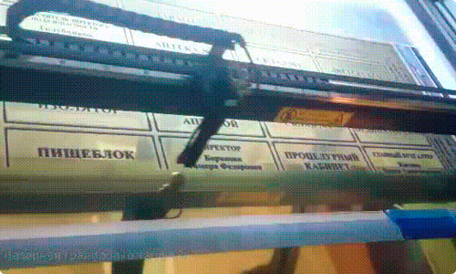
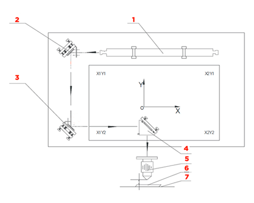
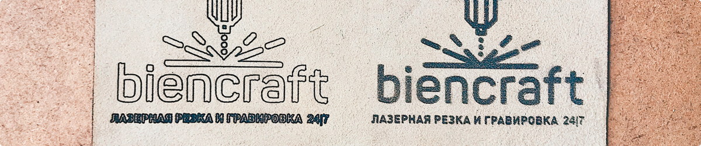

Лазерная Гравировка CO2
Лазерная гравировка — основы процесса.

В лазерном станке свет от излучателя передается через систему зеркал на линзу, где он приобретает окончательную фокусировку и попадает на гравируемый материал. Под давлением сфокусированного лазерного луча материал поддаться обжигу, после чего остаться рельеф и мы получаем четкий рисунок по Вашему макету.
1 – лазерный излучтаель, 2 – первое неподвижное зеркало, 3 – второе зеркало, 4 – третье зеркало “летающей оптики”, 5 – тубус с фокусирующей линзой, 6 – обрабатываемый материал, 7 – рабочий стол.
Преимущества:
- Процесс гравировки занимает в среднем 10 минут;
- Приемлемая цена при высоком качестве изделия;
- Отсутствие физического воздействия на материал позволяет гравировать труднодоступные участки материала;
- Площадь воздействия лазера – примерно 10-20 микрон, что позволяет гравировать даже самые мелкие детали с высокой точностью;
- Процесс гравировки задается и координируется ЧПУ, поэтому Вы можете не переживать, что «что-то пойдет не так».
2 основных вида гравировки — что выбрать?
Контурная гравировка — это когда луч небольшой мощности прорезает грани вашего рисунка, создавая границы изображения. Применяется при окрашивании деталей и позволяет существенно сэкономить на гравировке.